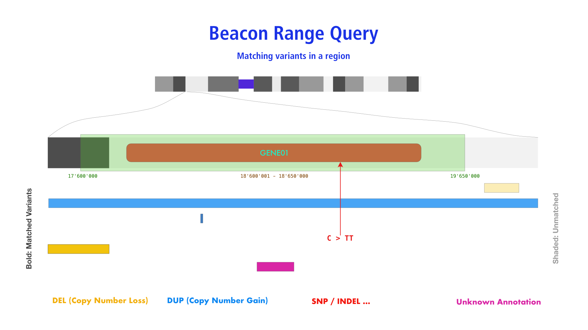

Genomic Variant Queries¶
For querying of genomic variations Beacon v2 builds on and extends the options provided by earlier versions.
Beacon Sequence Queries¶
Sequence Queries query for the existence of a specified sequence at a given genomic position. Such queries correspond to the original Beacon queries and are used to match short, precisely defined genomic variants such as SNVs and INDELs.
Parameters¶
referenceNamestart(single value)alternateBasesreferenceBases
Example: EIF4A1 Single Base Mutation¶
This is an example for a single base mutation (G>A) at a specific position (GRCh38 chromosome 17 7577120)
in the EIF4A1 eukaryotic translation initiation factor 4A1.
?referenceName=NC_000017.11&start=7577120&referenceBases=G&alternateBases=A
Optional¶
datasetIds=__some-dataset-ids__filters...
{
"$schema":"beaconRequestBody.json",
"meta": {
"apiVersion": "2.0",
"requestedSchemas": [
{
"entityType": "genomicVariation",
"schema:": "https://raw.githubusercontent.com/ga4gh-beacon/beacon-v2/main/models/json/beacon-v2-default-model/genomicVariations/defaultSchema.json"
}
]
},
"query": {
"requestParameters": {
"g_variant": {
"referenceName": "NC_000017.11",
"start": [7577120],
"referenceBases": "G",
"alternateBases": "A"
}
}
},
"requestedGranularity": "record",
"pagination": {
"skip": 0,
"limit": 5
}
}
There are optional parameters [datasetIds, filters ...] and also the option to specify the response type
(through requestedGranularity) and returned data format (requestedSchemas). Please follow this up in the
framework documentation.
?assemblyId=GRCh38&referenceName=17&start=7577120&referenceBases=G&alternateBases=A
Optional¶
datasetIds=__some-dataset-ids__
?ref=GRCh38&chrom=17&pos=7577121&referenceAllele=C&allele=A
Optional¶
beacon=__some-beacon-id__
Before Beacon v0.4 a 1-based coordinate system was being used.
Beacon Range Queries¶
Beacon Range Queries are supposed to return matches of any variant with at least
partial overlap of the sequence range specified by reference_name, start and end
parameters.

Parameters¶
referenceNamestart(single value)end(single value)- optional
variantTypeORalternateBasesORaminoacidChangevariantMinLengthvariantMaxLength
Use of start and end
Range queries require the use of single start and end parameters, in contrast
to Bracket Queries.
Example: Any variant affecting EIF4A1¶
?assemblyId=GRCh38&referenceName=17&start=7572837&end=7578641
{
"$schema":"https://raw.githubusercontent.com/ga4gh-beacon/beacon-v2/main/framework/json/requests/beaconRequestBody.json",
"meta": {
"apiVersion": "2.0",
"requestedSchemas": [
{
"entityType": "genomicVariation",
"schema:": "https://raw.githubusercontent.com/ga4gh-beacon/beacon-v2/main/models/json/beacon-v2-default-model/genomicVariations/defaultSchema.json"
}
]
},
"query": {
"requestParameters": {
"g_variant":
"referenceName": "NC_000017.11",
"start": [ 7572837 ],
"end": [ 7578641 ]
}
}
},
"requestedGranularity": "record",
"pagination": {
"skip": 0,
"limit": 5
}
}
Range Queries are new to Beacon v2
Range Queries are new to Beacon v2
Beacon GeneId Queries¶
GeneId Queries are in essence a variation of Range Queries in which the coordinates are replaced by the HGNC gene symbol. It is left to the implementation if the matching is done on variants annotated for the gene symbol or if a positional translation is being applied.

Parameters¶
geneId- optional
variantTypeORalternateBasesORaminoacidChangevariantMinLengthvariantMaxLength
?geneId=EIF4A1&variantMaxLength=1000000&variantType=DEL
{
"$schema":"https://raw.githubusercontent.com/ga4gh-beacon/beacon-v2/main/framework/json/requests/beaconRequestBody.json",
"meta": {
"apiVersion": "2.0",
"requestedSchemas": [
{
"entityType": "genomicVariation",
"schema:": "https://raw.githubusercontent.com/ga4gh-beacon/beacon-v2/main/models/json/beacon-v2-default-model/genomicVariations/defaultSchema.json"
}
]
},
"query": {
"requestParameters": {
"g_variant":
"geneId": "EIF4A1",
"variantType": "EFO:0030067"
}
}
},
"requestedGranularity": "record",
"pagination": {
"skip": 0,
"limit": 5
}
}
Beacon Bracket Queries¶
Bracket Queries allow the specification of sequence ranges for both start and end positions of a genomic variation. The typical example here is the query for similar structural variants - particularly CNVs - affecting a genomic region but potentially differing in their exact base extents.
Parameters¶
referenceNamestart(min) andstart(max) - i.e. 2 start parametersend(min) andend(max) - i.e. 2 end parametersvariantType(optional)
Use of start and end
Bracket queries require the use of two start and end parameters, in contrast
to Range Queries.
List Parameters in GET Requests
Since the direct interpretation of list parameters in queries is not supported by
some server environments (e.g. PHP, GO…), list parameters such as start and end
should be provided as comma-concatenated strings when using them in GET requests.
Example: CNV Query - TP53 Deletion Query by Coordinates¶
The following example shows a "bracket query" for focal deletions of the TP53 gene locus:
- The start of the deletion has to occurr anywhere from approx. 2.5Mb 5' of the CDR start to just before the end of the CDR.
- The end of the matched CNVs has to be anywhere from the start of the gene locus to approx. 2.5Mb 3' of its end.
This leads to matching of deletion CNVs which have at least some base overlap with the gene locus but are not larger than approx. 5Mb (operational definitions of focality vary between 1 and 5Mb).
?datasetIds=TEST&referenceName=NC_000017.11&variantType=DEL&start=5000000,7676592&end=7669607,10000000
Optional¶
datasetIds=__some-dataset-ids__filters...
{
"$schema":"https://raw.githubusercontent.com/ga4gh-beacon/beacon-v2/main/framework/json/requests/beaconRequestBody.json",
"meta": {
"apiVersion": "2.0",
"requestedSchemas": [
{
"entityType": "genomicVariation",
"schema:": "https://raw.githubusercontent.com/ga4gh-beacon/beacon-v2/main/models/json/beacon-v2-default-model/genomicVariations/defaultSchema.json"
}
]
},
"query": {
"requestParameters": {
"g_variant": {
"referenceName": "NC_000017.11",
"start": [ 5000000, 7676592 ],
"end": [ 7669607, 10000000 ],
"variantType": "DEL"
}
}
},
"requestedGranularity": "record",
"pagination": {
"skip": 0,
"limit": 5
}
}
There are optional parameters [datasetIds, filters ...] and also the option to specify the response type
(through requestedGranularity) and returned data format (requestedSchemas). Please follow this up in the
framework documentation.
?assemblyId=GRCh38&referenceName=17&variantType=DEL&start=5000000,7676592&end=7669607,10000000
Optional¶
datasetIds=__some-dataset-ids__
CNV query options were only implemented with Beacon v0.4, based on Beacon+ prototyping.
Genomic Allele Query (Short Form)¶
When available variants can be identified through their genomic HGVS short form.
?genomicAlleleShortForm=NM_004006.2:c.4375C>T
Aminoacid Change Query¶
Annotated variants can potentiallyqueried using the single amino acid replacement
format. The aminoacidChange parameter may be combined with e.g. a geneId to increase
specificity
?aminoacidChange=V600E&geneId=BRAF
variantType Parameter Interpretation¶
The variantType parameter is essential for scoping queries beyond precise sequence
queries. While versions of Beacon before v2 had demonstrated the use of a few, VCF
derived values (particularly for CNV queries using DUP or DEL), the relation of these
values to underlying genomic variations had not been precisely defined.
Implementation of variantType in Beacon Instances
The current Beacon query model does not limit the use of values for variantType since
at this time no single specification provides unanimous definitions
of genomic variation categories.
Future variantType parameter use
While for legacy reasons and widespread use of VCFs as input source Beacon v2 documents the use of VCF-like terms, in principle other variant terms can be used (though with possibly negative implications in federated settings). The field of structural genomic variant annotations is rapidly developing, with more specific terms now becoming available e.g. through the Experimental Factor Ontology or the GA4GH Variant Representation Standard VRS (which ligns with the main EFO terms).
CNV Term Use Comparison in Computational (File/Schema) Formats¶
This table is maintained in parallel with the hCNV community documentation.
| EFO | Beacon | VCF | SO | GA4GH VRS1 | Notes |
|---|---|---|---|---|---|
EFO:0030070 |
DUP2 orEFO:0030070 |
DUPSVCLAIM=D3 |
SO:0001742 copy_number_gain |
EFO:0030070 gain |
a sequence alteration whereby the copy number of a given genomic region is greater than the reference sequence |
EFO:0030071 low-level copy number gain |
DUP2 orEFO:0030071 |
DUPSVCLAIM=D3 |
SO:0001742 copy_number_gain |
EFO:0030071 |
|
EFO:0030072 high-level copy number gain |
DUP2 orEFO:0030072 |
DUPSVCLAIM=D3 |
SO:0001742 copy_number_gain |
EFO:0030072 |
commonly but not consistently used for >=5 copies on a bi-allelic genome region |
EFO:0030073 focal genome amplification |
DUP2 orEFO:0030073 |
DUPSVCLAIM=D3 |
SO:0001742 copy_number_gain |
EFO:0030072 |
commonly but not consistently used for >=5 copies on a bi-allelic genome region, of limited size (operationally max. 1-5Mb) |
EFO:0030067 copy number loss |
DEL2 orEFO:0030067 |
DELSVCLAIM=D3 |
SO:0001743 copy_number_loss |
EFO:0030067 |
a sequence alteration whereby the copy number of a given genomic region is smaller than the reference sequence |
EFO:0030068 low-level copy number loss |
DEL2 orEFO:0030068 |
DELSVCLAIM=D3 |
SO:0001743 copy_number_loss |
EFO:0030068 |
|
EFO:0020073 high-level copy number loss |
DEL2 orEFO:0020073 |
DELSVCLAIM=D3 |
SO:0001743 copy_number_loss |
EFO:0020073 |
a loss of several copies; also used in cases where a complete genomic deletion cannot be asserted |
EFO:0030069 complete genomic deletion |
DEL2 orEFO:0030069 |
DELSVCLAIM=D3 |
SO:0001743 copy_number_loss |
EFO:0030069 |
complete genomic deletion (e.g. homozygous deletion on a bi-allelic genome region) |
Last updated 2023-07-13 to align with 2023-03-22 hCNV documentation (VRS 1.3 adjustment) by @mbaudis¶
updated 2023-03-20 by @mbaudis (VRS proposal)¶
Query Parameter Change Log¶
Beacon v2¶
- use of sequence reference id's which obviate the need for a
assemblyIdparameter - range queries
- with specified single start and end parameters a query should match any vatiant with partial or complete overlap with this sequence range
- additional parameters (e.g.
referenceBases,alternateBases,variantType...) may be used to scope the range query
- query by
aminoacidChange - query by
geneId variantMinLength,variantMaxLength
Beacon v1 (based on v0.4)¶
- switch to 0-based interbase coordinates for the API with 1-based coordinates
recommended for query forms
- this represents the common GA4GH usage and the practice e.g. of the UCSC genome browser
- introduction of bracketed queries
- specification of intervals for
startandendpositions when querying multi-base variants allows for "fuzzy" CNV queries
- specification of intervals for
- support of a
variantTypeparameter to specify e.g. CNV queries (DUP,DEL)variantTypeis not required for precise queries with specifiedreferenceBasesandalternateBases
-
The VRS annotations refer to the status from v1.3 (2022) when the new class
CopyNumberChange(discussion...) with the use of the EFO terms. ↩ -
While the use of VCF derived (
DUP,DEL) values had been introduced with beacon v1, usage of these terms has always been a recommendation rather than an integral part of the API. We now encourage the support of more specific terms (particularly EFO) by Beacon developers. As example, the Progentix Beacon API uses EFO terms but provides an internal term expansion for legacyDUP,DELsupport. ↩↩↩↩↩↩↩↩ -
VCFv4.4 introduces an
SVCLAIMfield to disambiguate between in situ events (such as tandem duplications; known adjacency/ break junction:SVCLAIM=J) and events where e.g. only the change in abundance / read depth (SVCLAIM=D) has been determined. Both J and D flags can be combined. ↩↩↩↩↩↩↩↩ -
VRS did not adopt the "amplification" term due to possible inconsistencies ↩